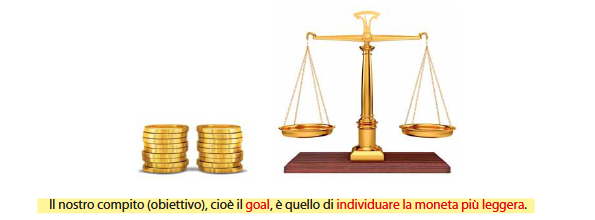

Un orafo deve produrre 18 monete d’oro uguali. Ne produce 17 corrette e 1 più leggera.
Disponiamo solo di una bilancia a due piatti che può dire: «sinistra più pesante», «destra più pesante», «equilibrio».
Come individuare la moneta falsa in sole 3 pesate?
Situazione iniziale nel problema della bilancia:
Modelliamo come tripla (I, O, R):
Risolvere il problema significa: per ogni istanza i ∈ I esiste una sequenza di al più 3 pesate
i cui esiti determinano univocamente o ∈ O.
9 vs 9.
3 vs 3.
1 vs 1 tra le 3 sospette.
Idea chiave: usare la tripartizione e sfruttare i tre esiti possibili della bilancia.
Sapendo a priori che la moneta difettosa è più leggera, qual è il numero massimo di monete
che puoi distinguere con w pesate? E cosa ottieni per w = 3?
Risposta. Ogni pesata ha 3 esiti possibili (sx più pesante, dx più pesante, equilibrio).
In w pesate distingui al più 3w casi distinti.
w = 3 ⇒ fino a 27 monete.w = 4 ⇒ fino a 81 monete, ecc.# Regola generale (moneta più leggera nota a priori)
monete_massime(w) = 3^w